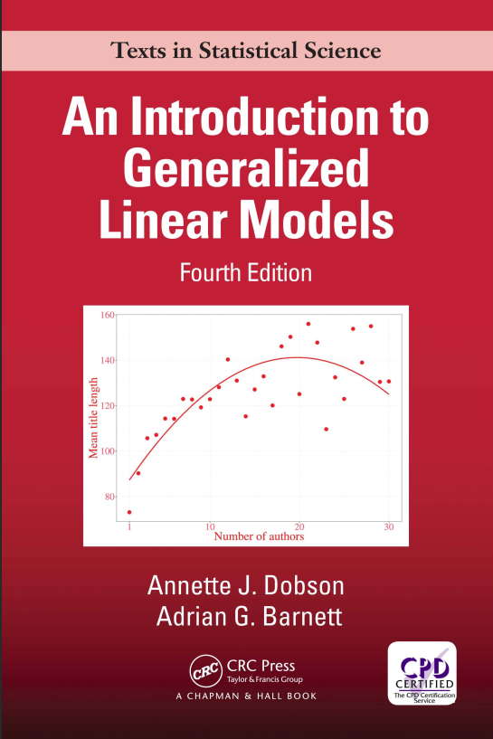
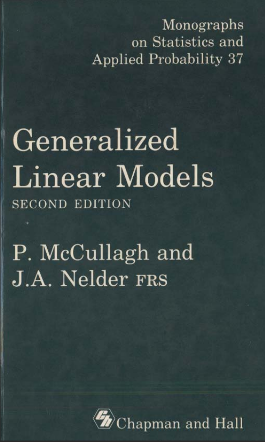
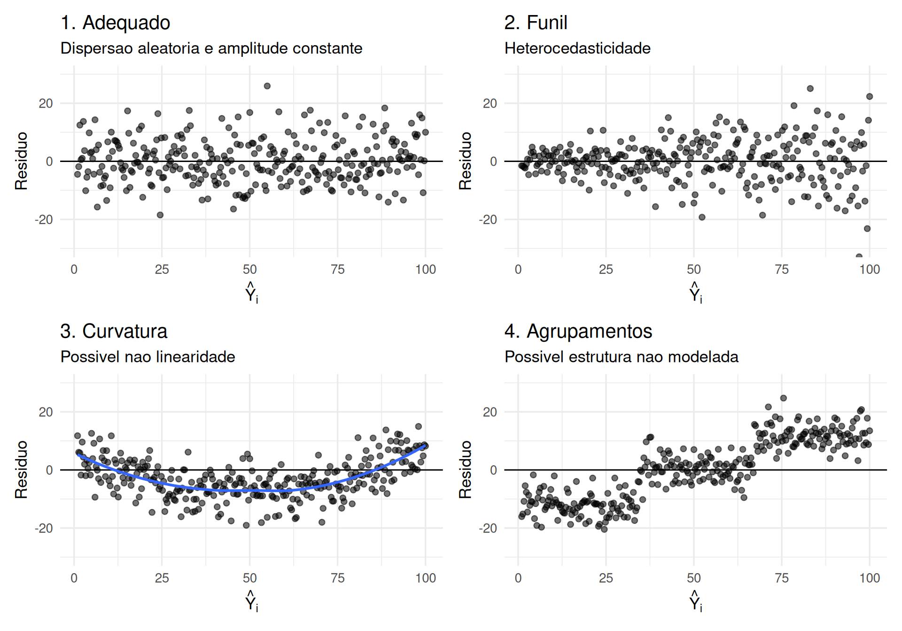
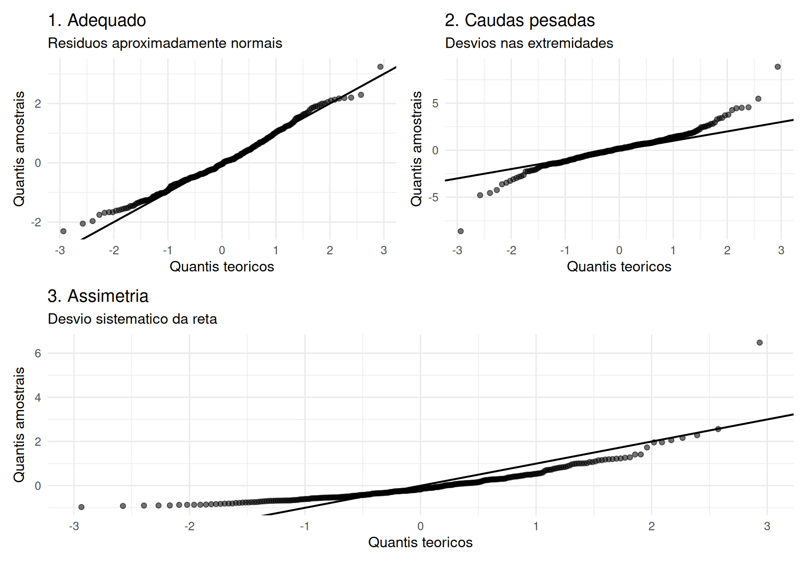
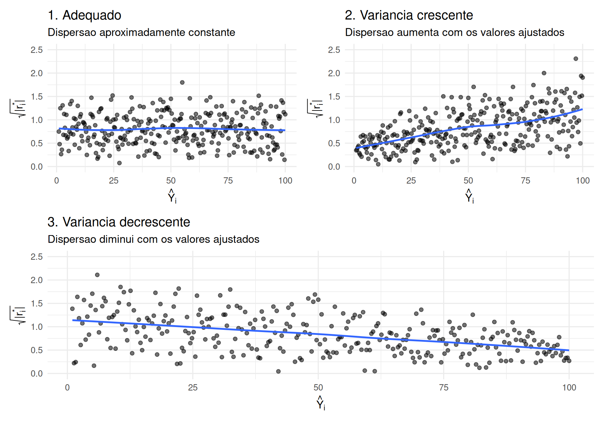

O Modelo Normal Linear
Fundamentos e Diagnóstico
ESTAT0092 – Modelos Lineares Generalizados
Prof. Dr. Sadraque E. F. Lucena
http://sadraquelucena.github.io/mlg
Canais de Comunicação e Materiais da Disciplina
Grupo no WhatsApp: http://tiny.cc/mlg262
Informações da disciplina
- Componente curricular: ESTAT0092 – Modelos Lineares Generalizados
- Período: 6º semestre
- Carga horária: 60 horas (4 créditos)
- Horário:
- Quartas - 20h45 às 22h15
- Sextas - 19h00 às 20h30
- Docente: Prof. Dr. Sadraque E. F. Lucena
Objetivo da Disciplina
- Compreender as limitações do Modelo Linear Clássico;
- Dominar a estrutura teórica da Família Exponencial de distribuições;
- Estimar parâmetros via Máxima Verossimilhança e Algoritmo IWLS;
- Interpretar coeficientes em diferentes escalas (Logit, Log, Identidade, etc.);
- Avaliar a qualidade do ajuste utilizando a Deviance e resíduos apropriados;
- Aplicar MLGs em problemas reais com dados biológicos, econômicos e sociais, entre outros.
Ementa
- Família exponencial de distribuições.
- Ajuste de modelos.
- Função de ligação.
- Modelos lineares generalizados especiais.
- Estimação.
- A função desvio.
- Testes de hipóteses.
- Análise de dados reais.
- Análise dos resíduos.
- Técnicas de diagnóstico.
Conteúdo Programático
Parte 1. Família Exponencial de Distribuições
A base probabilística dos MLGs
- Definição e forma canônica
- Média, variância e função de variância
- Propriedades teóricas
- Principais membros: Normal, Binomial, Poisson, Gama, Inversa Normal
Conteúdo Programático
Parte 2. Estrutura e Estimação nos MLGs
A mecânica da modelagem generalizada
- Componente aleatório, componente sistemático e função de ligação
- Ligações canônicas vs. não canônicas
- Função de verossimilhança e equações de estimação
- O Algoritmo IWLS (Iteratively Reweighted Least Squares)
Conteúdo Programático
Parte 3. Diagnóstico e Avaliação de Ajuste
Como saber se o MLG é adequado?
- Conceito de Modelo Saturado e Deviance
- Testes de Razão de Verossimilhança (LRT) e Análise de Deviance (ANODEV)
- Resíduos em MLG: Pearson, Deviance e Quantílicos
- Alavancagem e pontos influentes em MLG
Conteúdo Programático
Parte 4. Aplicações Principais
Modelos para dados reais
- Regressão Logística (respostas binárias e proporções)
- Regressão de Poisson e Binomial Negativa (dados de contagem e superdispersão)
- Modelos Gama e Log-Normal (dados contínuos assimétricos positivos)
- Tópicos avançados e seleção de modelos (AIC/BIC)
Avaliação
- Serão realizadas avaliações contínuas.
- A aprovação requer uma média maior ou igual a 5,0.
Datas Importantes
Não haverá aula:
- 28/Out/2026: Dia do Servidor Público (recesso acadêmico)
- 20/Nov/2026: Dia Nacional de Zumbi e da Consciência Negra (feriado nacional)
- 25 e 27/Nov/25: XII SEMAC
Bibliografia Recomendada


Regressão Linear
O Modelo Normal Linear
\[Y_i = \beta_0 + \beta_1 X_{i1} + \cdots + \beta_p X_{ip} + \varepsilon_i, \quad i=1, \dots, n\]
em que:
- Componente Aleatório: \(\varepsilon_i \sim N(0, \sigma^2)\) independentes
- Média Condicional: \(E(Y_i | X_i) = \mu_i = \beta_0 + \beta_1 X_{i1} + \cdots + \beta_p X_{ip}\)
- Homocedasticidade: \(\text{Var}(\varepsilon_i) = \text{Var}(Y_i | X_i) = \sigma^2\) (constante)
- Distribuição da Resposta: \(Y_i | X_i \sim N(\mu_i, \sigma^2)\)
No MLG: Esta estrutura será flexibilizada. \(Y_i\) poderá seguir outras distribuições (Binomial, Poisson, Gama) e a média \(\mu_i\) será conectada ao preditor linear por uma função de ligação \(g(\mu_i)\).
Modelo Explicativo ou Preditivo?
Modelo Explicativo
- Interesse nos efeitos causais/associativos das covariáveis;
- Interpretação direta dos coeficientes (\(\beta\));
- Foco em inferência, testes de hipóteses e ICs;
- Fortemente embasado na teoria do problema.
Modelo Preditivo
- Interesse em prever o valor de novas observações (\(Y_{novo}\));
- Foco na capacidade de generalização fora da amostra;
- Validação cruzada e erro quadrático médio de previsão;
- Pode sacrificar a interpretabilidade em favor da acurácia.
Atenção: Os critérios de seleção e avaliação dependem do objetivo! Um modelo com alto \(R^2\) pode ter péssimo desempenho preditivo por overfitting.
Antes do Modelo: Conheça os Dados
- A análise estatística rigorosa começa na preparação e limpeza da base.
- Checklist essencial:
- Qual é a variável resposta? Qual é o seu suporte (contínua, contagem, binária)?
- Qual é a unidade observacional?
- Quais são as variáveis explicativas e seus tipos?
- Existem variáveis categóricas (necessidade de codificação em dummies)?
- Existem valores impossíveis, erros de digitação ou duplicações?
- Existem valores extremos (outliers) nas covariáveis e na resposta?
- Qual o padrão de valores ausentes (missing values)?
Tipos de Variáveis e Tratamento de NA
Variáveis Categóricas
- Garantir que estejam codificadas como
factorno R. - O R criará automaticamente \(k-1\) variáveis dummy para um fator com \(k\) níveis, assumindo o primeiro nível como categoria de referência.
Valores Ausentes (NA)
- Avaliar o percentual e o mecanismo de ausência.
- Abordagens:
- Análise de casos completos: Ok para baixo % de ausências aleatórias.
- Imputação simples: Média/mediana (distorce a variância).
- Imputação múltipla (ex: pacote MICE): Recomendada quando há padrão de ausência moderado.
Ajuste do Modelo via Mínimos Quadrados e Verossimilhança
Em forma matricial: \[ Y = X\beta + \varepsilon, \quad \varepsilon \sim N(0, \sigma^2 I_n) \]
Mínimos Quadrados Ordinários (MQO): Minimiza a Soma de Quadrados dos Resíduos \(SQR(\beta) = (Y - X\beta)^\top (Y - X\beta)\), resultando em: \[\widehat{\beta} = (X^\top X)^{-1} X^\top Y\]
Máxima Verossimilhança (EMV): Sob a suposição de Normalidade, o EMV para \(\beta\) é exatamente idêntico ao estimador de MQO.
Da Soma de Quadrados ao Conceito de Desvio
A qualidade do ajuste no modelo normal é mensurada pela Soma de Quadrados dos Resíduos (SQR): \[SQR = \sum_{i=1}^n (y_i - \widehat{y}_i)^2\]
Estimador da Variância dos Erros (\(\sigma^2\)): \[\widehat{\sigma}^2 = \frac{SQR}{n - p - 1}\]
Nos MLGs, a \(SQR\) é generalizada pelo conceito de Desvio (Deviance), medida baseada na verossimilhança que compara o modelo ajustado ao modelo saturado.
Matriz de Covariância dos Estimadores e Erros-Padrão
Como \(\widehat{\beta} = (X^\top X)^{-1} X^\top Y\) é uma combinação linear de \(Y\), sua matriz de variância-covariância é dada por: \[\text{Var}(\widehat{\beta}) = \sigma^2 (X^\top X)^{-1}\]
O erro-padrão do coeficiente \(\widehat{\beta}_j\), denotado por \(SE(\widehat{\beta}_j)\), é a raiz quadrada do \(j\)-ésimo elemento da diagonal de \(\widehat{\sigma}^2 (X^\top X)^{-1}\).
Teste \(t\) de Wald para significância individual: \[H_0: \beta_j = 0 \quad \text{vs} \quad H_1: \beta_j \neq 0 \implies t_j = \frac{\widehat{\beta}_j}{SE(\widehat{\beta}_j)} \sim t_{n-p-1}\]
Avaliação Global do Modelo
| Medida | Fórmula / Definição | Pergunta / Interpretação |
|---|---|---|
| \(R^2\) | \(1 - \frac{SQR}{SQT}\) | Quanto da variabilidade observada de \(Y\) é explicada pelas covariáveis? |
| \(R^2_{ajustado}\) | \(1 - \left[\frac{(1-R^2)(n-1)}{n-p-1}\right]\) | O ganho de explicação compensa a penalização pelo número de parâmetros? |
| Teste \(F\) Global | \(\frac{SQE / p}{SQR / (n - p - 1)}\) | O conjunto de regressores melhora o ajuste em relação ao modelo apenas com intercepto? |
Avaliação Global do Modelo
| Medida | Fórmula / Definição | Pergunta / Interpretação |
|---|---|---|
| AIC | \(2k - 2\ln(\widehat{L})\) | Qual modelo oferece melhor compromisso entre ajuste e complexidade? |
| BIC | \(k\ln(n) - 2\ln(\widehat{L})\) | Qual modelo é preferível quando aplicamos penalização mais severa para amostras grandes? |
Comparação de Modelos Aninhados: O Teste F
Para comparar um Modelo Reduzido (\(R\)) com \(g\) parâmetros contra um Modelo Completo (\(F\)) com \(p\) parâmetros (\(p > g\), com \(q = p - g\) restrições):
\[H_0: \beta_{g+1} = \dots = \beta_p = 0\]
- Calculamos a estatística \(F\) parcial: \[F = \frac{(SQR_R - SQR_F) / q}{SQR_F / (n - p - 1)} \sim F_{q, \, n-p-1}\]
Conexão com MLG: Nos MLGs, a comparação de modelos aninhados é feita de forma análoga substituindo o Teste \(F\) pelo Teste de Razão de Verossimilhança (LRT) baseado na diferença de Deviances.
Interpretação Prática dos Coeficientes (\(\beta\))
1. Variável Contínua (\(X_j\))
- Mantendo as demais variáveis constantes, o aumento de 1 unidade em \(X_j\) está associado a uma variação média de \(\widehat{\beta}_j\) unidades em \(Y\).
2. Variável Categórica (Dummies)
- Se \(X_{\text{sul}} = 1\) e a referência é o Norte: \(\widehat{\beta}_{\text{sul}}\) é a diferença média na resposta \(Y\) do grupo Sul em relação ao grupo Norte.
3. Variável de Interação (\(X_1 \cdot X_2\))
- O efeito marginal de \(X_1\) sobre \(Y\) depende do nível de \(X_2\): \[\frac{\partial Y}{\partial X_1} = \widehat{\beta}_1 + \widehat{\beta}_{12} X_2\]
Interpretação em Escala Logarítmica
Quando aplicamos a transformação \(\ln(Y) = \beta_0 + \beta_1 X_1 + \varepsilon\):
\[\widehat{Y} = e^{\widehat{\beta}_0 + \widehat{\beta}_1 X_1}\]
- O coeficiente \(\widehat{\beta}_1\) representa uma variação multiplicativa (percentual) na escala original de \(Y\): \[\text{Variação }\%\text{ em } Y \approx 100 \times \widehat{\beta}_1 \% \quad (\text{ou exata: } 100 \times (e^{\widehat{\beta}_1} - 1)\%)\]
Conexão com MLG: Esta é a exata mecânica da função de ligação logaritmo (\(\ln(\mu) = X\beta\)) empregada nas Regressões de Poisson e Gama!
Incerteza da Estimação: IC da Média vs. IP Individual
Ao realizar predições para um novo perfil de covariáveis \(x_0\), há duas perguntas diferentes:
| Média | Observação individual | |
|---|---|---|
| Pergunta | Qual é a média de (Y) para esse perfil? | Qual será o valor de uma nova observação? |
| Intervalo | Intervalo de confiança | Intervalo de predição |
| Incerteza | Incerteza na estimação da média | Incerteza da média + variabilidade individual |
| Variância | \(\sigma^2 \cdot x_0^\top (X^\top X)^{-1} x_0 = \sigma^2 \cdot h_{00}\) | \(\sigma^2 \cdot (1 + h_{00})\) |
| Largura | Mais estreito | Mais amplo |
Seleção de Variáveis: Abordagem Clássica
- Procedimento interativo de construção de modelos:
- Avaliar significância individual e global;
- Testar remoção de regressores não significativos via Teste \(F\) parcial;
- Reajustar e reavaliar diagnósticos.
- Métodos Automáticos:
- Backward, Forward, Stepwise (via
stepAIC()no R).
- Backward, Forward, Stepwise (via
Alerta Metodológico: A seleção automática não substitui o conhecimento teórico do problema. Variáveis de controle de grande relevância teórica devem ser mantidas no modelo mesmo que o \(p\)-valor não seja significante.
Diagnóstico: Por que Analisar os Resíduos?
Os resíduos ordinários são definidos por: \[e_i = Y_i - \widehat{Y}_i\]
As suposições fundamentais do Modelo Normal Linear são:
- Linearidade e Erro Nulo: \(E(\varepsilon_i) = 0\)
- Homocedasticidade: \(\text{Var}(\varepsilon_i) = \sigma^2\)
- Independência: \(\text{Cov}(\varepsilon_i, \varepsilon_j) = 0, \quad \forall i \neq j\)
- Normalidade: \(\varepsilon_i \sim N(0, \sigma^2)\)
A análise de resíduos é a principal ferramenta para checar se tais hipóteses são plausíveis na prática.
Diagnóstico 1: Resíduos × Valores Ajustados (Residuals vs Fitted)
Gráfico \(e_i\) versus \(\widehat{Y}_i\). Usado para verificar linearidade e homocedasticidade.
O que esperar: Dispersão aleatória em torno do zero, sem padrão discernível e com amplitude constante.
Problemas e Sintomas:
- Formato de funil: Heterocedasticidade (variância cresce/diminui com a média).
- Formato de U ou curvatura: Não linearidade (falta de termos quadráticos ou interações).
- Agrupamentos isolados: Estrutura não modelada (variável categórica omitida).
Diagnóstico 1: Resíduos × Valores Ajustados (Residuals vs Fitted)

Figura 1
Diagnóstico 1: Resíduos × Valores Ajustados (Residuals vs Fitted)
Possíveis Soluções para Inadequações:
- Transformação da variável resposta \(Y\) (ex: \(\sqrt{Y}\), \(\ln(Y)\));
- Transformação de covariáveis ou inclusão de termos de ordem superior (\(X^2\));
- Inclusão de termos de interação (\(X_1 \cdot X_2\));
- Modelagem explícita da variância (Mínimos Quadrados Ponderados);
- Migração para MLG (ex: se a variância cresce com a média, a distribuição de Poisson ou Gama é mais adequada).
Diagnóstico 2: Q-Q Plot Normal
Gráfico dos quantis amostrais dos resíduos padronizados versus os quantis teóricos da distribuição Normal padrão.
O que esperar: Pontos dispostos perfeitamente sobre a reta de referência de 45 graus.
Problemas Detectados:
- Fugas nas pontas (caudas pesadas/leves): Presença de outliers ou distribuição com caudas mais densas que a Normal.
- Formato em S (assimetria): Resíduos com distribuição assimétrica positiva ou negativa.
Diagnóstico 2: Q-Q Plot Normal

Figura 2
Diagnóstico 2: Q-Q Plot Normal
Implicações e Soluções:
- Checar erros de digitação na base de dados;
- Avaliar a necessidade de transformação de \(Y\);
- Testar modelos alternativos apropriados para dados assimétricos;
- Lembrar: O Teorema Central do Limite garante a consistência assintótica das estimativas em amostras grandes, mas a inferência exata em amostras pequenas depende criticamente da Normalidade.
Diagnóstico 3: Scale-Location
Gráfico da raiz quadrada dos resíduos padronizados \(\sqrt{|r_i^*|}\) versus os valores ajustados \(\widehat{Y}_i\).
Objetivo principal: Avaliar a suposição de homocedasticidade de forma mais clara do que o gráfico clássico de resíduos.
O que esperar: Linha suave (lowess) aproximadamente horizontal, com pontos espalhados aleatoriamente ao seu redor.
Sintoma de Violação: Linha com inclinação acentuada indicando variação sistemática na dispersão do erro ao longo dos valores preditos.
Possíveis soluções: As mesmas do Dignóstico 1.
Diagnóstico 3: Scale-Location

Figura 3
Diagnóstico 4: Residuals vs Leverage e Matriz Chapéu (\(H\))
Gráfico projetado para identificar pontos influentes que combinam alto leverage com resíduos elevados.
A Matriz Chapéu (Hat Matrix \(H\))
A projeção que transforma observações em valores ajustados: \[\widehat{Y} = X \widehat{\beta} = X(X^\top X)^{-1} X^\top Y = H Y\]
- Os elementos da diagonal principal \(h_{ii} = H_{ii}\) são os valores de alavancagem (leverage).
- Propriamente, \(0 \le h_{ii} \le 1\) e \(\sum h_{ii} = p + 1\).
- Avalia o quão distante a observação \(i\) está do centro do espaço das covariáveis \(X\).
Alavancagem, Distância de Cook e Influência
Distância de Cook (\(D_i\))
Avalia o impacto global no vetor de parâmetros \(\widehat{\beta}\) caso a observação \(i\) seja removida do ajuste: \[D_i = \frac{r_i^{*2}}{p + 1} \left( \frac{h_{ii}}{1 - h_{ii}} \right)\]
onde \(r_i^*\) é o resíduo studentizado.
- Responde a Pergunta: Quanto o ajuste do modelo mudaria sem essa observação?
Alavancagem, Distância de Cook e Influência
Distância de Cook (\(D_i\))
| Situação | Nível de Resíduo | Nível de Leverage (\(h_{ii}\)) | Diagnóstico / Ação |
|---|---|---|---|
| Caso A | Pequeno | Baixo | Observação típica e pouco preocupante |
| Caso B | Pequeno | Alto | Alto potencial de influência, mas ajusta-se bem |
| Caso C | Grande | Baixo | Possível outlier em \(Y\) |
| Caso D | Grande | Alto | Ponto Influente Crítico (Alta \(D_i\)) |
Gestão de Pontos Influentes
Quando identificar uma observação com alta Distância de Cook:
- Investigar a origem:
- Erro de digitação ou medição? \(\rightarrow\) Corrigir.
- Observação pertencente a outra população? \(\rightarrow\) Remover com justificativa.
- Observação legítima de um evento raro? \(\rightarrow\) NÃO remover sumariamente.
- Regra de Ouro: Nunca exclua um ponto de dados legítimo apenas porque ele é influente ou ajusta-se mal ao modelo Normal!
Análise de Sensibilidade
Se o ponto influente for um dado legítimo, realize uma Análise de Sensibilidade (ajuste do modelo com e sem o ponto):
O que comparar:
- Alterações nos coeficientes \(\widehat{\beta}\);
- Erros-padrão e alteração de significância estatística;
- Mudanças nos intervalos de confiança;
- Alterações nas predições e conclusões substantivas.
Como reportar:
- Apresente o modelo principal ajustado com todos os dados;
- Apresente em tabela comparativa o modelo sem as observações influentes;
- Conclusões inalteradas: O resultado é robusto.
- Conclusões alteradas: O resultado é sensível, e essa limitação deve ser explicitada.
Multicolinearidade e VIF
A multicolinearidade ocorre quando duas ou mais variáveis explicativas possuem forte correlação linear.
Consequência: Inflação catastrófica das variâncias dos estimadores \(\text{Var}(\widehat{\beta}_j)\), tornando os coeficientes instáveis e imprecisos.
Fator de Inflação da Variância (VIF): \[VIF_j = \frac{1}{1 - R_j^2}\] onde \(R_j^2\) é o coeficiente de determinação da regressão de \(X_j\) contra todas as demais covariáveis.
Regra Prática: \(VIF_j > 5\) requer atenção; \(VIF_j > 10\) indica multicolinearidade severa.
Do Modelo Normal aos MLGs
No Modelo Linear Normal: \[Y_i \sim N(\mu_i, \sigma^2), \qquad \mu_i = X_i \beta\]
Nos Modelos Lineares Generalizados (MLG): \[Y_i \sim \text{Distribuição da Família Exponencial}(\mu_i, \phi)\] \[g(\mu_i) = X_i \beta\]
em que \(g(\cdot)\) é uma função de ligação diferenciável e monótona.
Do Modelo Normal aos MLGs
Exemplos de Estruturas de Modelagem:
| Tipo de Resposta \((Y)\) | Distribuição Típica | Função de Ligação Canônica | Equação do Modelo |
|---|---|---|---|
| Contínua Simétrica | Normal | Identidade | \(\mu_i = X_i \beta\) |
| Binária / Proporção | Binomial | Logit | \(\ln\left(\frac{\mu_i}{1-\mu_i}\right) = X_i \beta\) |
| Contagem (Taxa) | Poisson | Logaritmo | \(\ln(\mu_i) = X_i \beta\) |
| Contínua Assimétrica (+) | Gama | Inversa | \(\frac{1}{\mu_i} = X_i \beta\) |
Projeto da Próxima Aula
Objetivo
Selecionar uma base de dados real e realizar uma análise completa e rigorosa aplicando o Modelo Normal Linear.
Requisitos Mínimos da Base de Dados
- Variável resposta quantitativa contínua;
- Pelo menos 3 variáveis explicativas;
- Pelo menos 1 variável categórica (fator);
- Tamanho amostral razoável (\(n \ge 50\));
- Dados reais (não utilizar bases prontas didáticas como
mtcarsouiris).
Projeto da Próxima Aula
O relatório deverá conter as seções:
- Introdução e Descrição dos Dados: Contexto e dicionário de variáveis.
- Análise Exploratória: Distribuição da resposta e relações bivariadas.
- Especificação e Ajuste: Formulação do modelo inicial.
- Seleção de Modelos: Comparação via \(R^2_{ajustado}\), Teste \(F\) parcial e AIC/BIC.
- Diagnóstico Completo: Avaliação dos 4 gráficos clássicos de resíduos e VIF.
- Análise de Influência e Sensibilidade: Verificação de pontos influentes via \(D_i\).
- Interpretação do Modelo: Discussão prática dos coeficientes e predições.
- Código Utilizado: Apresentação do código usado paa análise dos dados.
Fim